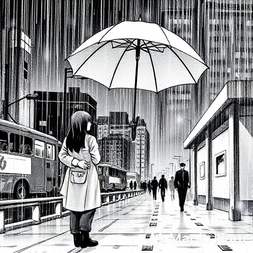
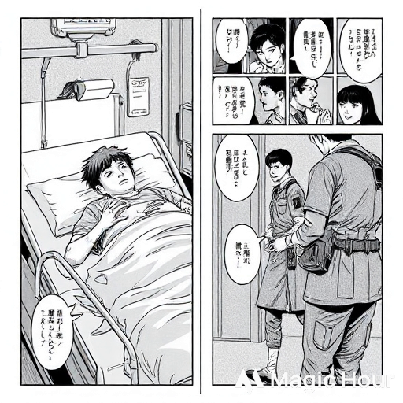
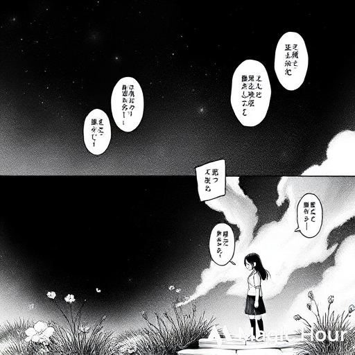
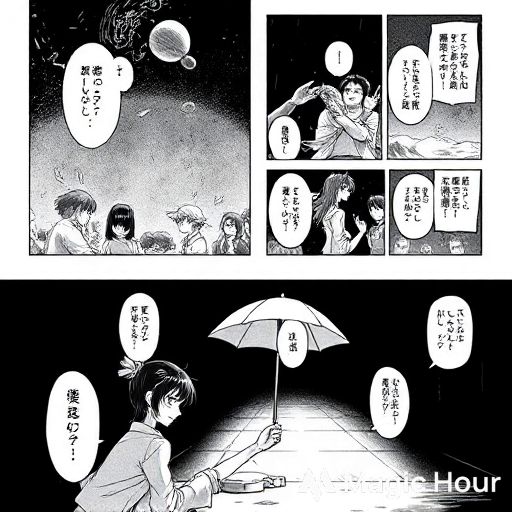
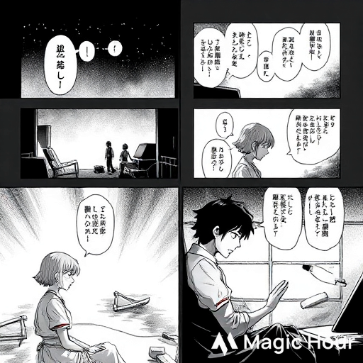
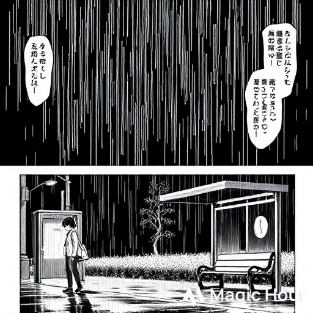

Strangers in Love
Genre: Tragic Romance / Drama
Chapter 1: The Girl with the Umbrella
The rain in Akeno City had a rhythm of its own—slow, heavy, endless. Water poured down cracked rooftops,
sliding through bullet holes and shattered glass.
The war had reduced the city to bones, yet people still tried to live among the ruins.
Lina, a twenty-two-year-old nurse, walked home with tired steps. Her white coat was stained with iodine and ash, her eyes hollow from nights
of patching up soldiers who never
came back. She paused beneath a flickering streetlamp where a bus stop once stood. The benches were half-broken, the timetable burned away.
That’s when she saw him. A soldier, maybe her age, sitting on the curb with a torn uniform and a faded photograph in his hands
. His name tag was barely legible—Kai Tanaka.
“Forget something?” she asked softly, holding her umbrella over him.
He looked up, blinking through the rain. “Maybe … myself.”
She laughed gently. “Then at least stay dry while you remember.”
They stood there, shoulder to shoulder under the single umbrella, the city falling apart around them. In that moment,
Akeno felt almost peaceful.

Chapter 2: The Wounded Soldier
Three days later, Lina walked into the emergency tent and froze.
On the stretcher before her lay the same man from the bus stop—Kai—his chest bandaged, blood seeping through.
“You again,” she murmured.
He smiled faintly, even in pain. “Guess I couldn’t stay away from your umbrella.”
Despite the chaos, she treated him carefully, cleaning wounds that ran deeper than skin.
When his pulse steadied, he started talking—about his unit,
his missing friends, the endless noise of artillery. She listened, not as a nurse,
but as someone who wanted to know who he was beneath the uniform.
Each night, when her shift ended, she found herself drawn back to his bed. Sometimes they spoke of the past;
other times they just sat in silence, listening to the rain on the tent roof.
“Why do you risk your life?” she asked one night.
Kai stared at the ceiling. “Because if we don’t fight, who’s left to protect?”
She didn’t answer. Instead, she reached for his hand, just for a second, before walking away.

Chapter 3: Letters in the Smoke
When Kai was sent back to the front, he left her a note: If I live, I’ll find you. If not, keep the umbrella.
Days turned into weeks. Lina began writing letters she couldn’t send—pages filled with the things she wished she’d said.
To her surprise, replies began arriving from the battlefield: short, tired sentences from Kai, written between missions.
He wrote about comrades lost, about the stars hidden behind clouds of smoke.
She wrote back about the hospital, the wounded children, the flowers she planted in empty medicine bottles.
They never said the word love, but every sentence carried it.
Then one morning, a blood-stained envelope arrived with only a few words:
“He’s missing.”
Lina read it again and again until the ink bled with her tears.

Chapter 4: The Return
Winter came early that year. Bombs thundered across Akeno, and the hospital shook with every blast.
One night, while gathering supplies from the outskirts, Lina heard a faint groan behind the rubble.
When she pulled away the debris, she froze. Kai—half-alive, his face pale, one leg shattered.
“I told you I’d find you,” he whispered weakly.
She dragged him into a half-destroyed shelter, hands trembling. For days,
she nursed him back with whatever scraps of medicine she could steal.
“I thought you were gone,” she said as he opened his eyes.
“I almost was,” he replied. “But I kept thinking about the girl with the umbrella.”
She laughed through her tears, touching his cheek. In that moment, nothing outside that tiny room mattered—the sirens,
the bombs, the world itself could end, and they wouldn’t have noticed.

Chapter 5: Whispers Before Dawn
They lived in hiding for weeks, surviving on rainwater and silence. Kai’s wounds never fully healed,
but his spirit did. He began to smile again.
At dawn, they would sit on the roof and watch the city smoke turn gold in the sunrise.
“You shouldn’t waste your light on me,” Kai said one morning.
“You’re my reason to keep shining,” she answered.
They dreamed of the impossible—a small house by the river, a garden, a world without sirens.
But the city was dying, and with it, their time.
The army began drafting again. When orders reached their shelter, Kai tried to hide them. Lina found the letter anyway.
“You’re leaving,” she whispered.
“I have to. It’s the only way the rest can live.”
She hugged him tight, feeling his heartbeat under her palms. “Then come back alive. Promise me.”
“I promise.”

Chapter 6: The Final Mission
The day Kai left, the sky was gray, wind howling through empty streets.
Lina stood at the doorway watching him disappear into the fog.
That night, the bridge out of Akeno was attacked. Gunfire echoed for hours.
She waited at the shelter window, candle burning low. When the explosions stopped, so did her breath.
The next morning, soldiers brought in the wounded. None were him.
By evening, the radio confirmed it: The bridge was destroyed. No survivors.
She searched the ruins for days, refusing to believe. On the fifth day, she found his broken dog tag lying beside a burnt letter.
Only one line survived the fire:
“If I can’t come back, promise me you’ll live.”
She fell to her knees, the ashes soaking in the rain.

Chapter 7: Rain Again
Years passed. The war ended, though peace felt strange. Akeno rebuilt itself—new walls,
new people—but Lina still walked its streets every evening, umbrella in hand.
She became the head nurse at the new hospital, teaching others how to heal both wounds and hearts.
Yet some nights, when the rain fell the same way it did years ago, she could almost hear his voice in the wind.
One evening, she stopped at that same old bus stop. The streetlight flickered like before.
Through the rain, she saw him—Kai—standing there with that tired smile, as if waiting for her.
She blinked, and he was gone. Only the empty umbrella remained beside the bench.
She picked it up, smiling through her tears.
“I kept my promise,” she whispered.
And somewhere beyond the rain, it felt like he smiled back.
